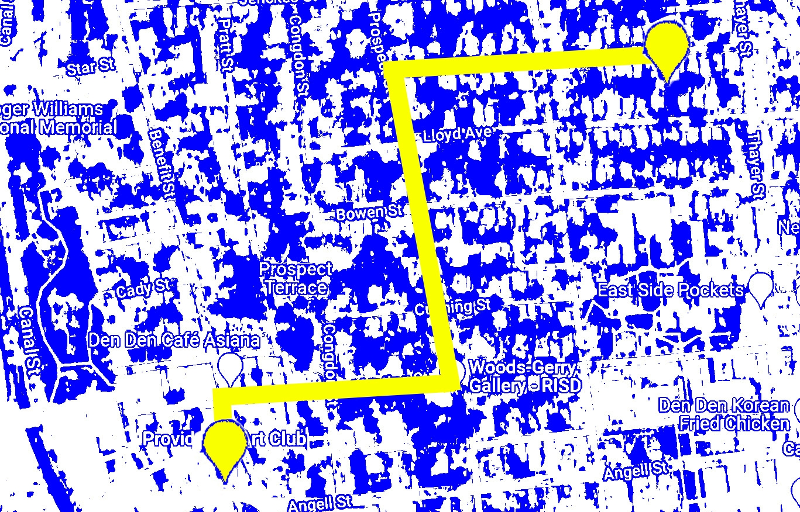

The point on the left is the Nature Lab, and the point on the right is where my house is. This area of Providence is called College Hill, and the one downside of the walk was that my house was on one side of the hill, while the Nature Lab was on the other.